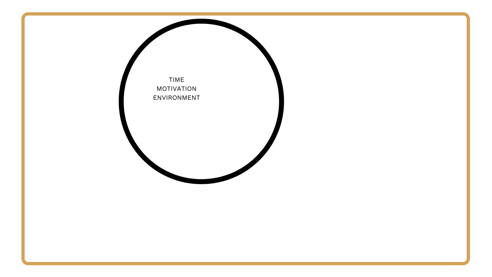
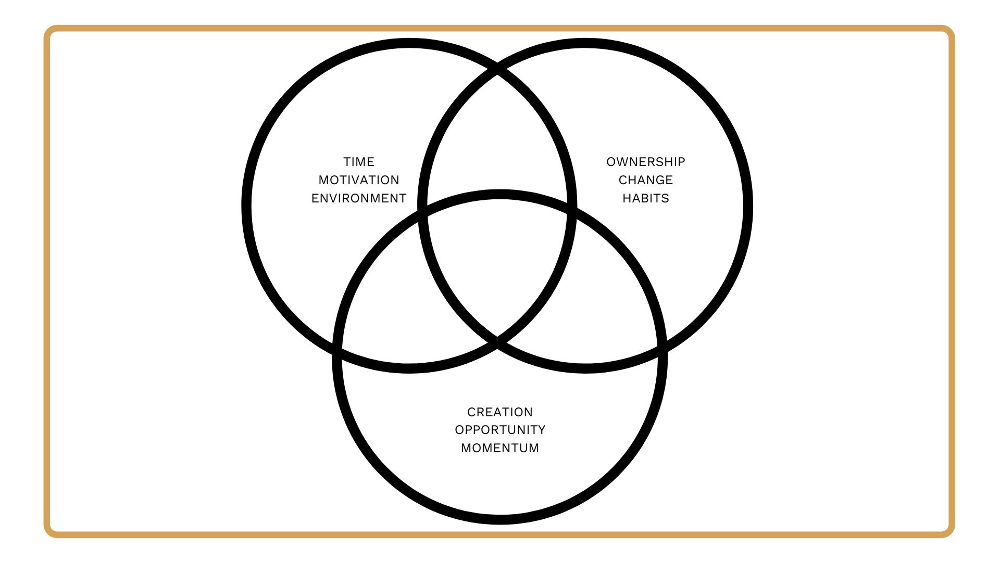
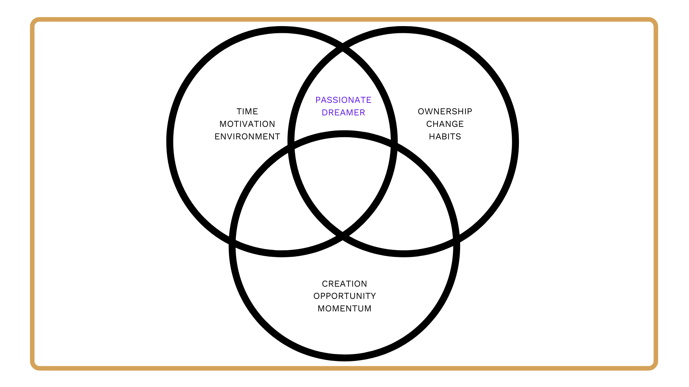
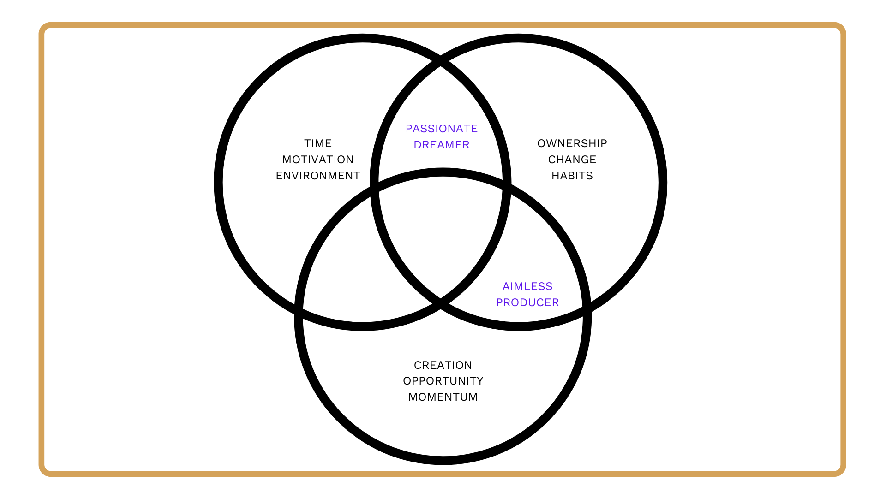
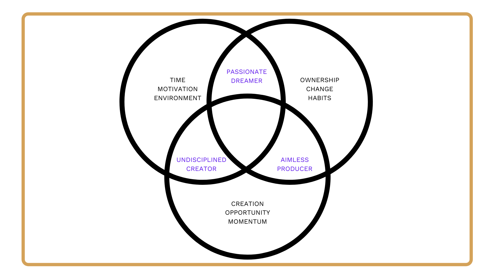
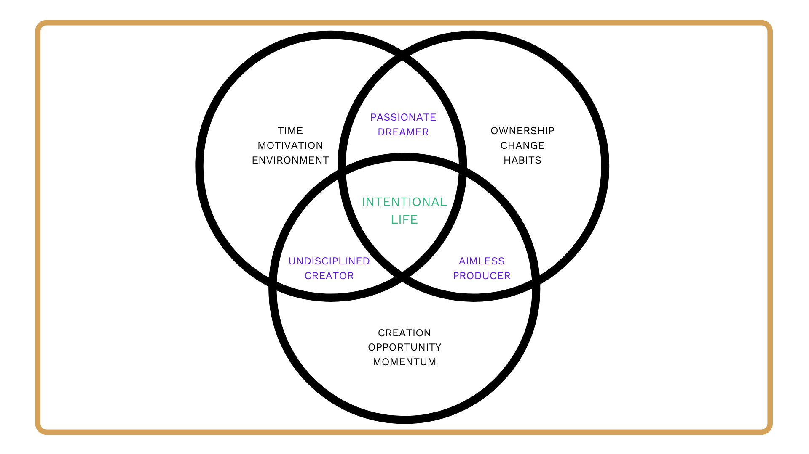

I had a mid-life crisis at 37.
It all began with a massive panic attack in 2018. It started off as confusion and quickly escalated into pure terror. I thought I was dying in front of my wife.
A 911 call, one EMS visit, and 3 hours later, I was stable. But the event was the catalyst in a new journey for me.
Overweight, overworked, and miserable, I eventually stepped down from my high-paying executive role at a technology company in Los Angeles. I knew I needed a drastic change and I thought that change could be found through self-employment.
A problem arose almost immediately.
Self-employment can be very similar to the regular 9 to 5 “rat race”, especially when you’re a workaholic with perfectionistic tendencies. Being a slave to your clients or to social media is not much different from the obligations at a “normal” job.
A year into running my own business, I started to crash again.
What began as a move towards self-employment turned into a two-year journey towards something different. A totally different life. A life designed with intention.
What does it mean to design an intentional life?
After two years of working towards one, here’s what I’ve landed on:
- A life spending my time on what I want, when I want, and with whom I want.
- A life where I do very little of what I don’t like and a lot of what I do.
- A life with limited obligations and as much freedom as possible.
- A life free of traditional full-time employment.
When you read those statements, your first reaction might be that it sounds childlike or fantastical. I’ve made peace with the potential judgment.
I believe it’s a more natural way to live than the assembly-line, 8-hour workday life we’ve inherited from the 1860s. Today, the internet provides us a better solution for building income online and spending more of our time with loved ones.
And while designing an intentional life is difficult, it’s also achievable. It requires a combination of proper planning and habit formation, mixed with a bias for action and an eye for opportunity.
Tips for intentional living
I looked back on 2 years worth of notes and experiences and grouped together nine key life-changing drivers into three groups. Many of them won’t be surprising. None of them are new discoveries. There are no magic “hacks”.
- Purpose (Time, Motivation, Environment)
- Discipline (Ownership, Change, Habits)
- Action (Creation, Opportunity, Momentum)
These are well-known, well-appreciated drivers. But most of us fail so often at getting them right. I believe it’s because we attempt to improve each driver or group, but often in isolation from the others.
It’s only when we understand and improve all nine drivers and three groups over time, that we can come closer to the intended outcome: an intentional life.
Purpose
The foundational group of three drivers makes up your purpose: time, motivation, and environment.

Time
We all know that time is our most finite resource. Non-renewable. The ultimate currency of life. But we tend to forget when faced with the day-to-day of work, family, and obligations.
Understanding that time is the ultimate currency is the fundamental driver of intentional life design.
Motivation
Motivation is what drives you. Why are you creating time freedom? If you’re creating that freedom without a specific motivation, there’s a high likelihood that you will be unfulfilled. The goal isn't to do nothing. The goal is to avoid what you dislike, and do more of what you love. Your motivation.
Environment
Your environment is what and whom you surround yourself with. Family, friends, peers, and influences.
Time and purpose are like a seed, and your environment like soil and water. It’s tough to grow surrounded by pessimists or complainers, those who are unreliable, or worse yet, untrustworthy.
It’s difficult to focus and prosper when addicted to the 24-hour news circus, or the politicians who thrive on your valuable time currency. Curating the proper environment creates the ecosystem in which you can thrive.
Discipline
Discipline is the group of behavioral drivers that create the proper accountability to grow your purpose: Ownership, change, and habits.
Ownership
Ownership is the understanding that you are completely in control of your own life. Nobody is coming to save you. Yes, some people have it tougher, while others have it much easier. This is factual. But you cannot design an intentional life if you believe you do not control it. This fundamentally destroys the concept of designing your own life.
Change
Change means breaking away from the routine and false comfort of the traditional system. It means doing new and interesting things with new and interesting people. Only when we extend our comfort zone can we truly find unique opportunities and outcomes. The fishing is often best where the fewest go.
Habits
As people we have our own internal business systems and processes called habits. Habits are the things we do routinely, often without noticing. If the statement, “how we spend our days is how we spend our lives” is true, then habits are how we spend our days. Because better habits mean better days, then it’s not a stretch to believe they are a core driver of a better life.
Action
Action is the group of drivers moving us from the old way of living to a newly designed, intentional life. To create freedom, we must have a larger share of automated income. That income comes from owning a piece of the modern world - capturing your own small corner of the internet. We do this through: creation, opportunity, and momentum.

Creation
The most common form of failure is a failure to start. Creation, on the other hand, is the act of getting started. We can understand our motivation, become more disciplined, and take accountability for our lives. But without action, we’re simply dreamers. When we create, we share our opinions and our work openly and at scale, online. It’s up to you to create a portfolio of unique work and opinions.
Opportunity
Opportunity is the outcome of sharing your ideas online. Any opinions or work shared freely will attract a group of interesting thinkers. Remember: do interesting things with interesting people. Doing so will help you develop skills. Use those skills to build assets, and those assets to create income. With that income, you create more time. The cycle continues.
Momentum
Momentum in intentional life design is no different than momentum in business or investing. Creating and seizing opportunity compounds over time, and compound attention and work wins over short-term hacks or virality. When something works, double down. When something fails, use those failures to eliminate or iterate and try again.
Two outta three ain’t bad. But it’s also not enough.
When I speak with people who are attempting to design (or redesign) their life with more intention, they generally fall into the “two outta three” camp.
The most common combination is purpose and discipline: The “passionate dreamer”.
The Passionate Dreamer

The passionate dreamer is someone who understands their purpose and has started to put in place their discipline.
They talk about making a change, starting over, and recreating their lives. The challenge? They never start.
They can’t pull the trigger, and they never move forward. Designing an intentional life becomes what many of our ideas become. Just a dream.
For years, this was me. I was afraid to put myself out there for the world to read or watch. Only when I started creating in 2018, did this go away. It was, and still is, one of the best choices of my life.
The Aimless Producer

The aimless producer is someone who has the discipline and is executing on taking action, but they lack an overarching purpose.
They are heads down looking for progress, and measuring their engagement. They are in competition with others and moving full speed ahead.
This was me when I launched my solopreneurship in 2019. Working to make money and not considering my purpose or my environment. It’s an unfulfilling hamster wheel with no end in sight.
The Undisciplined Creator

The undisciplined creator is someone who understands their motivation and has started taking action but lacks discipline.
They share their thoughts freely and shine a spotlight on their best work. They make interesting connections and come across wonderful opportunities. The problem? The success they imagine isn’t immediate.
When success isn’t immediate, they often crumble. The world isn’t fair. It works for everyone else. Why should I have to change? I want to keep doing things my way.
Today, I find myself in this camp. Struggling to improve habits, often convinced that it’s my way or the highway. It used to work - why doesn’t it still? It’s a constant battle to test and iterate. To find a new path.
In 2021, I’m working on improving this aspect of my life through reading, exercise, quiet time, and perspective.
How do I start living an intentional life?
The journey towards designing my life with intention will likely never end, but I feel excited to continue learning and growing.
If you're interested in designing or redesigning your life with more intention, here are the three groups and nine key drivers to always be improving, in the form of simple questions you can ask yourself.
Your purpose:
1. Do you truly appreciate time as currency?
2. What is your motivation for time freedom?
3. How have you curated an environment that supports your goal?
Your discipline:
4. Do you assume full responsibility for your life?
5. What changes have you made to help design a life with more intention?
6. What system(s) have you built for creating strong habits?
Your action:
7. How often are you sharing your opinions and work freely online?
8. When interesting opportunities come your way, are you seizing them?
9. Are you staying consistent and creating compound momentum?

I hope this resonates with someone going through a similar struggle.
Thanks for reading.